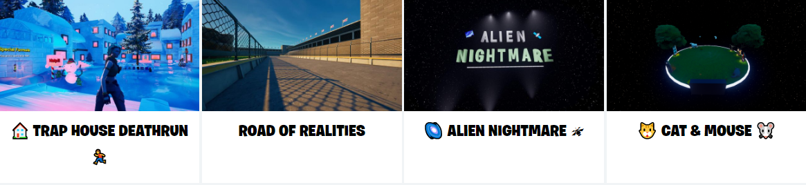

ЧТО ТАКОЕ «ТВОРЧЕСКИЙ РЕЖИМ»?
ТВОРЧЕСКИЙ РЕЖИМ ПОЗВОЛЯЕТ СОЗДАВАТЬ ИГРЫ И НОВЫЕ МИРЫ FORTNITE,
КОТОРЫЕ МОЖНО ОПУБЛИКОВАТЬ В СЕТИ И ПРЕДЛОЖИТЬ ДРУЗЬЯМ.
СОЗДАЙТЕ FORTNITE ПО СВОИМ ПРАВИЛАМ НА ЛИЧНОМ ОСТРОВЕ.
А ЕЩЁ ВЫ МОЖЕТЕ ОПРОБОВАТЬ МНОЖЕСТВО ИГР ОТ УЧАСТНИКОВ СООБЩЕСТВА ВМЕСТЕ С ДРУЗЬЯМИ.
ДЛЯ ЭТОГО ВВЕДИТЕ КОД ОСТРОВА ИЛИ ПОСЕТИТЕ ТВОРЧЕСКИЙ ЦЕНТР В ИГРЕ.
КОТОРЫЕ МОЖНО ОПУБЛИКОВАТЬ В СЕТИ И ПРЕДЛОЖИТЬ ДРУЗЬЯМ.
СОЗДАЙТЕ FORTNITE ПО СВОИМ ПРАВИЛАМ НА ЛИЧНОМ ОСТРОВЕ.
А ЕЩЁ ВЫ МОЖЕТЕ ОПРОБОВАТЬ МНОЖЕСТВО ИГР ОТ УЧАСТНИКОВ СООБЩЕСТВА ВМЕСТЕ С ДРУЗЬЯМИ.
ДЛЯ ЭТОГО ВВЕДИТЕ КОД ОСТРОВА ИЛИ ПОСЕТИТЕ ТВОРЧЕСКИЙ ЦЕНТР В ИГРЕ.
Интересные работы игроков

ТВОРЧЕСКИЙ РЕЖИМ FORTNITE:
ВОПРОСЫ И ОТВЕТЫ
МОГУТ ЛИ МОИ ДРУЗЬЯ ПРИСОЕДИНИТЬСЯ КО МНЕ НА ОСТРОВЕ ИЛИ КАРТЕ ТВОРЧЕСКОГО РЕЖИМА FORTNITE?
Да! Одновременно строить или играть в творческом режиме могут до 16 игроков.
Собирайте команду на экране лобби и вместе заходите в игру.
Да! Одновременно строить или играть в творческом режиме могут до 16 игроков.
Собирайте команду на экране лобби и вместе заходите в игру.
КАК ПОЛЬЗОВАТЬСЯ КОДОМ ТВОРЧЕСКОГО РЕЖИМА FORTNITE?
Шаг 1: Запустите Fortnite и выберите «Творческий режим» в меню выбора игры.
Щёлкните по кнопке «Изменить», чтобы получить доступ к этому меню.
Шаг 2: Нажмите «Играть», выберите «Код острова» и нажмите Enter.
Шаг 3: Введите код на этом экране и нажмите «Начать», чтобы войти в игру.
По желанию: Вы также можете подойти к любому рекомендуемому острову в творческом центре и ввести код там.
После короткой загрузки появится нужная вам игра.
Щёлкните по кнопке «Изменить», чтобы получить доступ к этому меню.
Шаг 2: Нажмите «Играть», выберите «Код острова» и нажмите Enter.
Шаг 3: Введите код на этом экране и нажмите «Начать», чтобы войти в игру.
По желанию: Вы также можете подойти к любому рекомендуемому острову в творческом центре и ввести код там.
После короткой загрузки появится нужная вам игра.